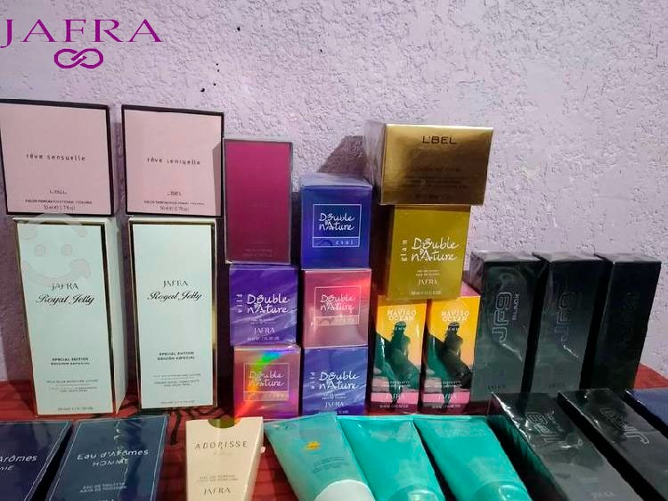

HISTORIA
JAFRA nace en Malibú, California en el año de 1956, cuando Jan y Frank Day, enlace que da nombre a JAFRA, aplicaron su experiencia en el mercado de venta directa, para construir esta empresa, que muy pronto se convirtio en un proyecto de vida para miles de familias en todo el mundo. En Mexico, JAFRA Cosmetics inicia operaciones en el mes de noviembre de 1979, con 16 empleados, actualmente despues de 27 año, contamos con 976 empleados, mas de 450,000 Comerciantes Independientes de Productos JAFRA, 4 oficinas Regionales en las ciudades de Guadalajara, Monterrey, Villahermosa, Ciudad de Mexico y mas de 74 Centros de Atencion en toda la Republica Mexicana. El gran éxito de nuestra empresa esta basado en el potencial humano que tiene como pilares la Mision, Vision y Valores de JAFRA, elementos fundamentales con los que ha logrado colocarse en primer lugar dentro del mercado de cosmeticos de la venta directa. El programa para Comerciantes Independientes de Productos JAFRA, brinda a todas las mujeres la oportunidad de iniciar y desarrollar un Negocio Propio e independiente, a traves de la adquisicion y comercializacion de productos de alta calidad asi como desarrollar su liderazgo al participar en el programa JAFRA logrando con esto un desarrollo integral.
MISION
El desarrollo integral de la mujer, forjando las bases de futuras generaciones. Crecemos y embellecemos compartiendo.
VISION
Llegar a ser la mejor compaña de Ventas Directas en el Mundo, ofreciendo a la mujer la mejor oportunidad de obtener su independencia Economica por medio de nuestro programa de linaje y el compartir productos y servicios que realzan la belleza femenina.


©2024. Derechos reservados
Desarrollado por: Castillo Santos Norma Alicia Matricula:02120643 Grupo:606
Plantel Nueva Tijuana